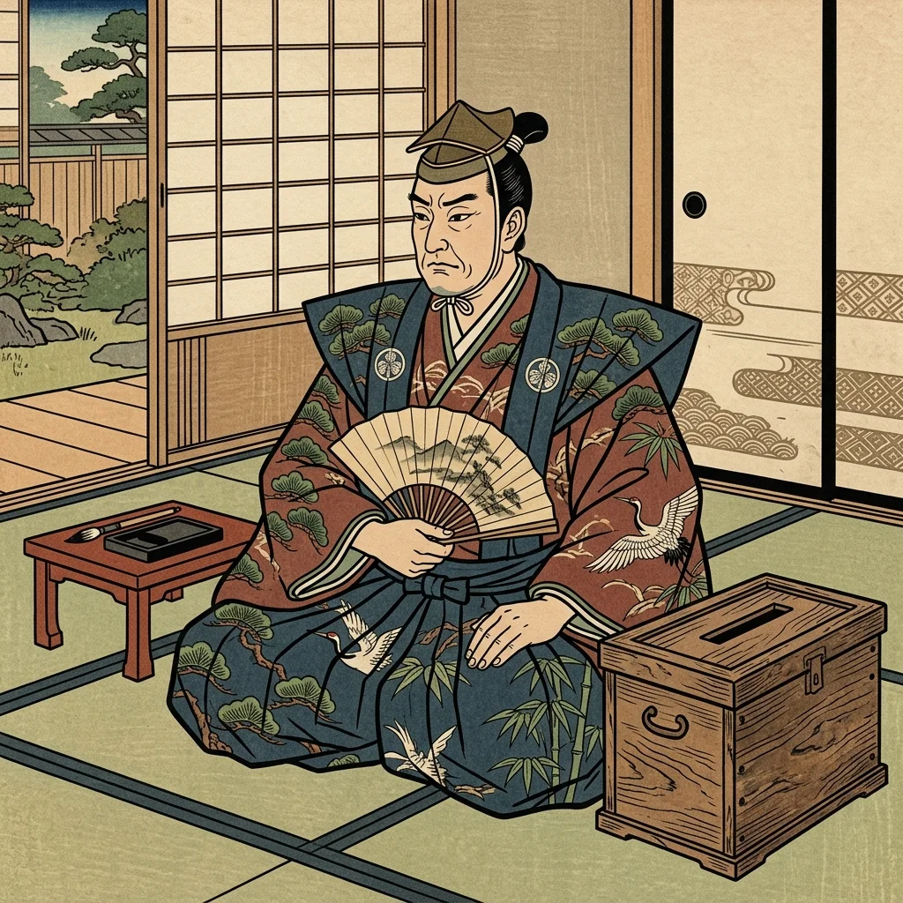
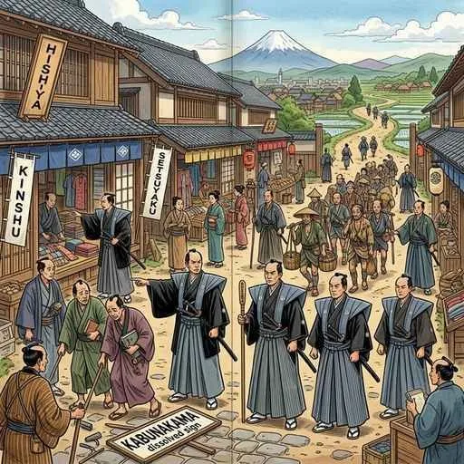

19. 幕府政治の改革と社会の変化
江戸時代の中期から後期にかけて、幕府は年貢収入の減少と、たび重なる大飢饉によって、深刻な財政赤字に苦しめられていました。この危機を乗り越えるため、将軍や老中たちは様々な「政治改革」を行いましたが、それぞれ方針が全く異なっていました。今回は、テストの超頻出テーマである「３つの政治改革（享保・田沼・寛政）」について詳しく対比解説します！
1. 徳川吉宗と「享保の改革（きょうほうのかいかく）」
18世紀のはじめ、幕府の財政難を救うために立ち上がったのが、紀伊藩主から第8代将軍となった徳川吉宗（とくがわよしむね）です。彼は質素倹約を呼びかけ、幕府の権威を取り戻そうとしました。
① 享保の改革の主な政策
- 上米の制（あげまいのせい）：大名に対し、石高1万石につき100石の米を幕府に納めさせる（一時的に米を集める）代わりに、参勤交代で江戸に滞在する期間を従来の「1年」から「半年」へと半分に短縮してあげました。
- 新田開発の奨励と「米将軍」：定免法（毎年の収穫に関係なく年貢率を一定にする）などを導入し、米の確保に全力を注いだため、吉宗は「米将軍」と呼ばれました。
- 目安箱（めやすばこ）の設置：江戸の庶民の意見や要求を直接投書させました。ここから、貧しい人向けの実質無料病院である「小石川養生所」の設置や町火消の組織化などが実現しました。
- 公事方御定書（くじかたおさだめがき）の制定：それまで裁判官の主観で行われていた裁判に明確な基準を作るため、裁判や刑罰の基準を定めた法律を作りました。

図1：庶民の生の声を政治に反映させるために吉宗が設置した「目安箱」のイメージ
2. 田沼意次の商業を重視した政治
吉宗が農民から限界まで年貢を搾り取る政治を行ったため、農村は疲弊し、百姓一揆が多発しました。そこで、老中となった田沼意次（たぬまおきつぐ）は、農業ではなく「商業（商人）」から税金を取ることで財政を再建しようと考えました。
① 田沼意次の主な政策
- 株仲間（かぶなかま）の推奨：商人たちの同業者組合である「株仲間」を積極的に公認し、営業の独占権を与える見返りとして、幕府に運上（うんじょう）や冥加（みょうが）という税金を納めさせました。
- 長崎貿易の拡大：俵物（ほしアワビ、フカヒレなど）や銅などを輸出し、海外から日本に大量の金や銀を呼び込もうとしました。
- 開発事業：蝦夷地（北海道）の調査や印旛沼（千葉県）の干拓などを進めました。
※意次の政治は、経済を一時的に潤しましたが、役人と商人の結びつきが強くなりすぎたことで、裏でお金を渡す賄賂（わいろ）政治が横行しました。また、浅間山の噴火や「天明の飢饉」による米不足が一揆を招き、意次は批判を浴びて失脚しました。
3. 松平定信と「寛政の改革（かんせいのかいかく）」
田沼意次の賄賂政治を批判し、吉宗の政治を手本にして厳しい緊縮・引き締め政治を行ったのが、吉宗の孫にあたる老中の松平定信（まつだいらさだのぶ）です。
① 寛政の改革の主な政策
- 囲米の制（かこいまいのせい）：再び飢饉が起きても困らないように、大名や町民に対し、社倉や義倉などに米を蓄えさせました。
- 棄捐令（きえんれい）：生活が苦しくなっている旗本や御家人（将軍直属の武士）を救うため、札差（商人）からの古い借金を帳消しにさせました。
- 寛政異学の禁（かんせいいがくのきん）：幕府の学校（聖堂学問所）において、幕府の身分制度の正当性を教える「朱子学」以外の儒学を教えることを禁止しました。
- 出版や娯楽の統制：洒落本や浮世絵など、世間を風刺したり娯楽性の強い出版物を厳しく取り締まりました。
※定信のあまりにも細かく厳しい政治は、人々の息が詰まるものでした。当時、「白河（定信の出身藩）の 清きに魚の すみかねて もとの濁りの 田沼（意次）こひしき」という風刺の狂歌が流行し、定信はわずか6年で失脚しました。

図2：享保の改革、田沼の政治、寛政の改革の方針の違いのイメージ
🔥 この単元のテスト対策・暗記のコツ
-
★
享保の改革（徳川吉宗）の最重要キーワード：
・大名に米を納めさせ参勤交代を減らした ➔ 上米の制
・庶民の意見を聞いた ➔ 目安箱（小石川養生所）
・裁判の基準 ➔ 公事方御定書 -
★
田沼意次の政治の方針と弊害（記述対策！）：
・方針：「株仲間を奨励して運上や冥加という税金を取るなど、商業を重視した政治」
・弊害：「役人と商人の癒着が進み、賄賂（わいろ）政治が横行したこと」 -
★
寛政の改革（松平定信）の最重要キーワード：
・武士の借金を帳消しにした ➔ 棄捐令
・幕府の公認学校で武士に朱子学以外の講義を禁じた ➔ 寛政異学の禁
・吉宗（祖父）を手本にし、厳しすぎる倹約と出版統制を行ったため、短命に終わったことを風刺の狂歌（白河の清きに〜）とセットで覚えておきましょう。